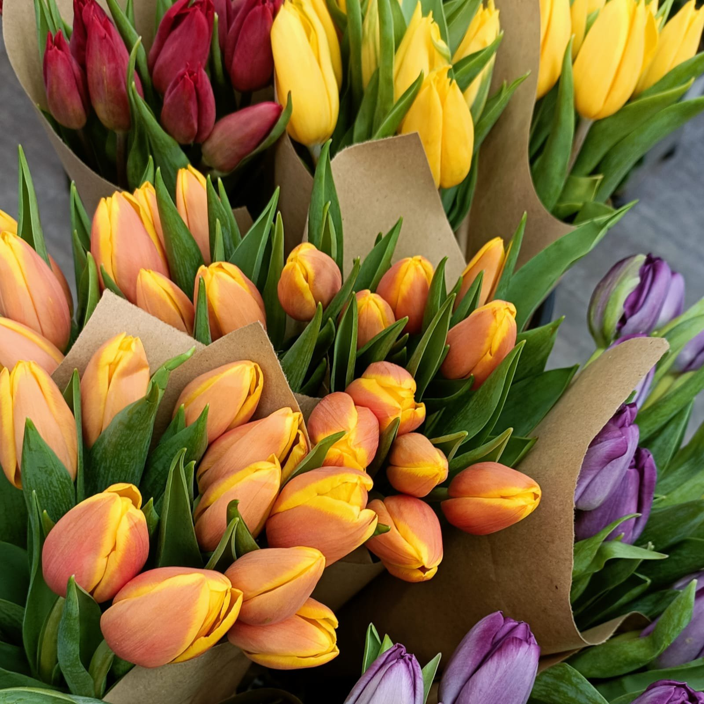

En nuestra floristería en Granada, creemos que las flores son la excusa para iluminar cualquier espacio y transformar momentos ordinarios en extraordinarios. Queremos formar parte de tus celebraciones, aniversarios, cumpleaños y momentos especiales, brindándote el toque mágico y aromático que solo las flores pueden ofrecer.